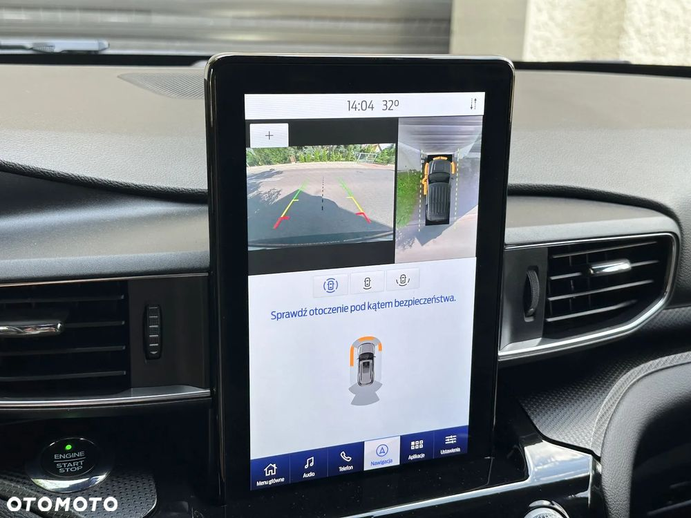
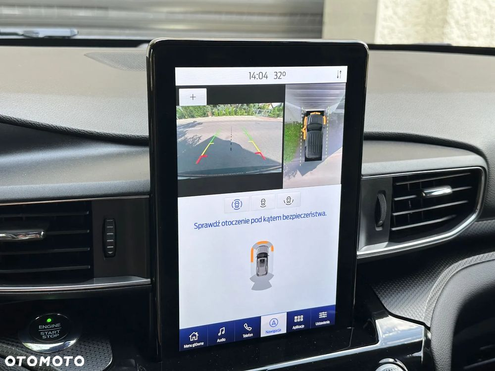

4x4 FORD EXPLORER ST 3.0 BENZ 368 KM AUTO W BDB STANIE zarejestrowany w polsce !!! ważny przegląd i oc !! PRZEBIEG 10.000 KM - 100 % ORYGINALNY wyposażenie : -klimatyzacja - MOCNO CHŁODZI !!! -poduszki powietrzne -ABS - ESP -zamek centralny -światła przeciwmgielne -elektryczne lusterka -elektryczne szyby -radio samochodowe - komputer pokładowy - TEMPOMAT - SYSTEMY WSPOMAGAJĄCE KIEROWCĘ - CZUJNIKI PARKOWANIA - NAWIGACJA GPS - KAMERA COFANIA 360 - KLIMATYZOWANE FOTELE - PODGRZEWANA KIEROWNICA - DACH PANORAMICZNY - TEMPOMAT AKTYWNY - ASYSTENT PARKOWANIA - SAM PARKUJĘ - I WIELE WIELE INNYCH .... - - - - - - - - - - - - - - - - - - - - VIN - 1FM5K8GC9MGA40620 - - - - - - - - - -- - - - - - - - - - - - NIE WYMAGA ŻADNYCH NAPRAW !!!!! MOŻLIWOŚĆ KUPNA AUTA Z DODATKOWĄ GWARANCJĄ TECHNICZNĄ NA 12 MIESIĘCY !!! RATY , KREDYT - ROZPATRUJEMY WSZYSTKIE WNIOSKI jest czynna 7 DNI W TYGODNIU w każda sobotę i niedziele ! WARSZAWA


 
